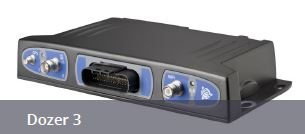

<!--     <md-toolbar class="toolbar-height">
        <h2 class="md-toolbar-tools title-navBar">
          <div flex="15">
            <md-icon  hide-gt-sm  show-sm show-xs flex-offset="5" ng-click="main.toggleNav()">
              <i class="material-icons icon-style" ng-if="main.navMenuDisplay">menu</i>
              <i class="material-icons icon-style" ng-if="!main.navMenuDisplay">arrow_back</i>
            </md-icon>
            
          </div>
        <span hide show-gt-xs flex-offset-gt-sm="40" class="title-text">SNM941</span>
      </h2>
    </md-toolbar>
 -->
    <md-toolbar>
        <div class='md-toolbar-tools header-bar'>
            <md-icon  hide-gt-sm  show-sm show-xs flex-offset="5" ng-click="main.toggleNav()">
              <i class="material-icons icon-style" ng-if="main.navMenuDisplay">menu</i>
              <i class="material-icons icon-style" ng-if="!main.navMenuDisplay">arrow_back</i>
            </md-icon>
            

            <span flex></span>
            <h3>SNM941</h3>
            <span flex></span>
        </div>
    </md-toolbar>


    
    <div layout="row" flex style="position: relative;">
        <!-- side nav starts here -->
        <md-sidenav flex-gt-sm="25" md-disable-backdrop="true" class="md-sidenav-left md-whiteframe-z2 sidenav-box" md-component-id="left" md-is-locked-open="$mdMedia('gt-sm')" >
            <md-list ng-click="main.toggleNav()">
                <md-list-item class="image-list">
                    
                </md-list-item>
                <md-list-item >
                    <md-button class="navbar-text" ui-sref="network_config">
                        <md-icon><i class="material-icons">cast_connected</i></md-icon>
                        Network Configuration
                    </md-button>
                </md-list-item>
                <md-list-item>
                    <md-button class="navbar-text" ui-sref="telematic">
                        <md-icon><i class="material-icons">settings</i></md-icon>
                        Telematic Configuration
                    </md-button>
                </md-list-item>
                <md-list-item>
                    <md-button class="navbar-text" ui-sref="rebroadcast">
                        <md-icon><i class="material-icons">settings</i></md-icon>
                        RTK Rebroadcast
                    </md-button>
                </md-list-item>
                <md-list-item>
                    <md-button class="navbar-text" ui-sref="diagnostics">
                        <md-icon><i class="material-icons">favorite</i></md-icon>
                        Daignostics
                    </md-button>
                </md-list-item>
                <md-list-item>
                    <md-button class="navbar-text" ui-sref="settings">
                        <md-icon><i class="material-icons">settings</i></md-icon>
                        System Settings
                    </md-button>
                </md-list-item>
            </md-list>
        </md-sidenav>
        <div flex>
            <ui-view></ui-view>
        </div>
    </div>